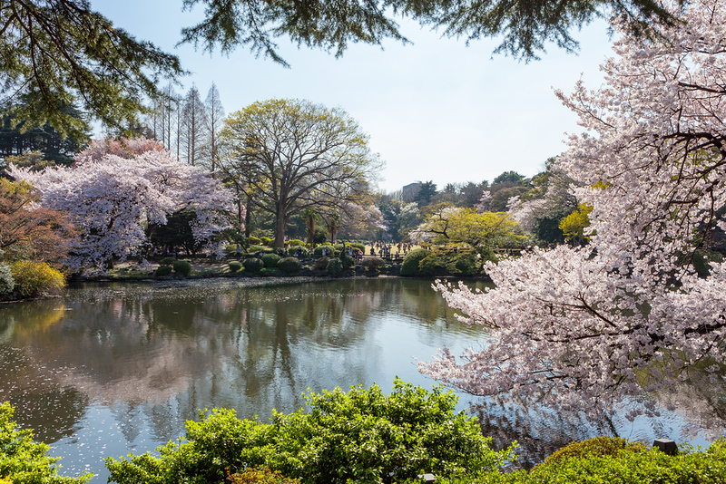
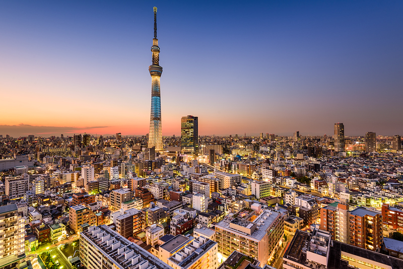
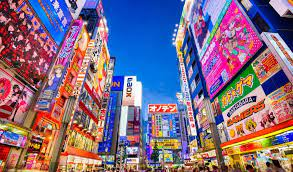

Tokyo (東京, Tōkyō) is Japan's capital and the world's most populous metropolis. It is also one of Japan's 47 prefectures, consisting of 23 central city wards and multiple cities, towns and villages west of the city center. The Izu and Ogasawara Islands are also part of Tokyo.
Prior to 1868, Tokyo was known as Edo. Previously a small castle town, Edo became Japan's political center in 1603 when Tokugawa Ieyasu established his feudal government there. A few decades later, Edo had grown into one of the world's largest cities. With the Meiji Restoration of 1868, the emperor and capital moved from Kyoto to Edo, which was renamed Tokyo ("Eastern Capital"). Large parts of Tokyo were destroyed in the Great Kanto Earthquake of 1923 and the air raids of 1945.
Today, Tokyo offers a seemingly unlimited choice of shopping, entertainment, culture and dining to its visitors. The city's history can be appreciated in districts such as Asakusa and in many excellent museums, historic temples and gardens. Contrary to common perception, Tokyo also offers a number of attractive green spaces in the city center and within relatively short train rides at its outskirts.

1. Stroll Through a Japanese Garden
Hidden around the city are some fantastic pockets of green.

2. If you need a bit of perspective on it all, take the elevators up the
Tokyo Skytree for some truly eye-popping views.
3. The current Imperial Palace (皇居, Kōkyo) is located on the former site of Edo Castle, a large park area surrounded by moats and massive stone walls
in the center of Tokyo, a short walk from Tokyo Station. It is the residence of Japan's Imperial Family.
Edo Castle used to be the seat of the Tokugawa shogun who ruled Japan from 1603 until 1867. In 1868, the shogunate was overthrown, and the country's capital and imperial residence were moved from Kyoto to Tokyo. In 1888 construction of a new Imperial Palace was completed.
The palace was once destroyed during World War Two, and rebuilt in the same style, afterwards.

4. Akihabara (秋葉原), also called Akiba after a former local shrine,
is a district in central Tokyo that is famous for its many electronics shops and has also gained recognition as the center of Japan's otaku (diehard fan) culture.
Akihabara has seen some redevelopment over the past years, which added some large, modern buildings to the mix of small to medium-sized shops and buildings.
Most prominent among them is a huge Yodobashi electronics store just next to the station.
5. One of the busiest pedestrian crossings in the world,
Shibuya crossing is perhaps the most iconic symbol of the city of Tokyo around the world.
Shibuya Crossing’s large advertising screens and heavy foot traffic means it is often compared
to the Times Square intersection in New York and Piccadilly Circus in London, and it is often seen as
representative of the ultra-modern image of Tokyo projected worldwide.